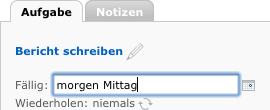
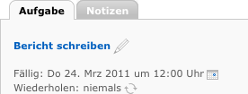

| Usability Pattern | Nachsichtiges Format |
|---|---|
| Alias | Forgiving Format |
| Problem | Benutzer möchten Eingabewerte frei eingeben, ohne sich um das korrekte Format kümmern zu müssen. |
| Lösung |
Akzeptiere Eingaben in verschiedenen Formaten, und interpretiere unvollständige oder nicht eindeutige Eingabewerte im Sinne des Benutzers. Ergänze oder korrigiere dabei unvollständige oder fehlerhafte Eingabewerte so, dass sie der angenommenenen Intention des Benutzers entsprechen. |
| Beispiel |
Remember The Milk Die Web-Anwendung Remember The Milk (RTM) zur Aufgabenverwaltung erlaubt Benutzern, das Fälligkeitsdatum von Aufgaben in verschiedenen, auch ungewöhnlichen Formaten einzugeben. Im Beispiel gibt ein Benutzer das Datum in natürlicher Sprache als „morgen Mittag“ ein. Das System interpretiert diese Eingabe als 12 Uhr des Folgetages. 
Freie Datumseingabe  Sinnvolle Interpretation (12 Uhr mittages des Folgetags) durch das System |
| Nutzungskontext |
|
| Begründung | Mit der Unterstützung für nachsichtige Eingabeformate passt sich das System an die Benutzern an – und erfordert nicht, dass sich die Benutzer an das System anpassen. Benutzer müssen sich nicht das eine zulässige Eingabeformat merken, sondern können Werte in verschiedenen, aus ihrer Sicht sinnvollen Formaten eingeben, auch unvollständig oder sogar fehlerhaft. Das System interpretiert die Eingaben im (vermuteten) Sinne der Benutzer und korrigiert oder ergänzt sie gegebenenfalls. Das System ist fehlertoleranter, für Benutzer wird die Arbeit mit dem System leichter. |
| Risiken, Nachteile, Kosten | Die Unterstützung für nachsichtige Eingabeformate birgt das Risiko einer Fehlinterpretation der Benutzereingaben durch das System. Korrigiert das System Benutzereingaben mehrfach falsch, werden Benutzer bei ihrer Arbeit mit dem System behindert und können verärgert reagieren. Nachsichtige Formate sollten deshalb nur dann unterstützt werden, wenn das System mit hoher Wahrscheinlichkeit den korrekten beabsichtigten Eingabewert erkennen kann (z.B. bei Datums-, Uhrzeit- oder Ortsangaben). |
| Zusammenspiel |
Ergänzung Direkte Validierung Nachsichtiges Format und Direkte Validierung können kombiniert werden. Dabei ist jedoch zu beachten, dass das das System bei der Validierung die vom System interpretierten bzw. korrigierten Eingabewerte prüfen muss (nicht die tatsächlichen Eingabewerte der Benutzer). |
| Anforderungserhebung |
Identifiziere Eingaben, bei denen verschiedene Eingabeformate denkbar sind.
|
| Anforderungsspezifikation |
Spezifiziere globale Vorgaben für den Einsatz des Usability Patterns „ Nachsichtiges Format “:
Spezifiziere, für welche Interaktionen das Usability Pattern „ Nachsichtiges Format “ eingesetzt wird. Annotiere und ergänze dazu vorhandene Use Cases :
|
{kind=link}
{kind=link}